«O Rosário é a escada mais curta para subir ao Céu»Site oficial da Associação Carlo Acutis
SÃO CARLO ACUTIS · 1991 — 2006 · CANONIZADO EM 7 DE SETEMBRO DE 2025
“A Eucaristia é a minha
autoestrada para o céu.” — São Carlo Acutis (1991–2006)
O primeiro santo da geração millennial. Morreu aos 15 anos e deixou uma estrada simples: a Missa, o Rosário e a caridade. Conheça a vida, os milagres reconhecidos e as relíquias — com a fonte em cada frase.
“A esperança não decepciona.”ROMANOS 5,5
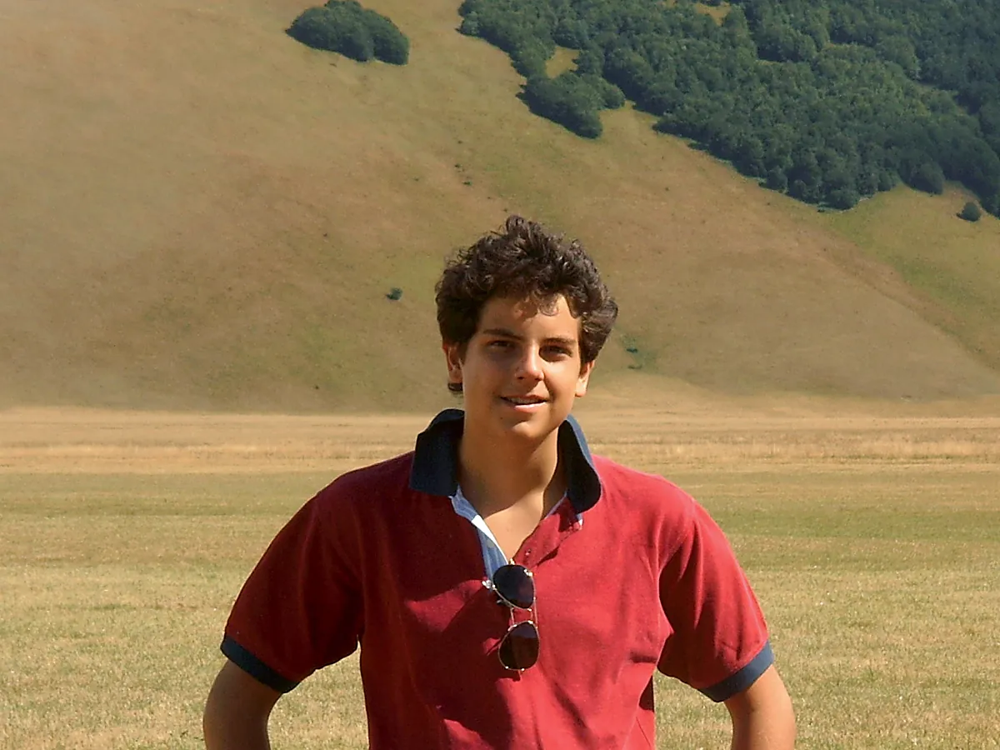
O SANTUÁRIO
Cinco portas para chegar até São Carlo Acutis.
Um santo de quinze anos, canonizado em 2025Este santuário é dedicado a São Carlo Acutis, canonizado em 7 de setembro de 2025. Aqui não há devoção inventada: cada data, frase, oração e milagre tem a fonte ao lado — e o que não tem fonte não entra.
7·9
Canonizado em 7 de setembro de 2025, na Praça São Pedro, pelo Papa Leão XIV — no mesmo dia que Pier Giorgio Frassati. Carlo morreu aos quinze anos, em Monza, e deixou uma estrada simples: a Missa, o Rosário e a caridade.
são carlo acutis · 1991 — 2006
Se você chegou aqui sem fé — ou com pouca: fique o tempo que quiser. Carlo tinha quinze anos e não era perfeito; dizia que a santidade não se alcança somando coisas, mas deixando espaço. «A conversão não é outra coisa senão deslocar o olhar de baixo para o Alto: basta um simples movimento do coração.» Este santuário não pede dinheiro em nome dele, não promete milagre e não publica nada sem fonte.
SÃO CARLO ACUTIS • 1991 — 2006
"A Eucaristia é a minha autoestrada para o céu."
Canonizado em 7 de setembro de 2025, Praça de São PedroO primeiro santo da geração millennial. Morreu aos 15 anos, em 2006, e atravessou o nosso tempo com uma frase simples: não desperdiçar a vida.
PALAVRAS DELE
Vinte e seis frases, cada uma com sua fonte.
As frases atribuídas a Carlo são publicadas pelo site oficial da Associação. O santuário não cria frases nem acrescenta as que circulam sem fonte.
«Uma vida é verdadeiramente bela só se se chega a amar Deus acima de todas as coisas e o próximo como a nós mesmos».Site oficial da Associação Carlo Acutis
«Criticar a Igreja significa criticar a nós mesmos! A Igreja é a dispensadora dos tesouros para a nossa salvação».Site oficial da Associação Carlo Acutis
«A única coisa que devemos realmente temer é o pecado».Site oficial da Associação Carlo Acutis
«Por que os homens se preocupam tanto com a beleza do próprio corpo e depois não se preocupam com a beleza da própria alma?»Site oficial da Associação Carlo Acutis
«Não eu mas Deus».Site oficial da Associação Carlo Acutis
«Todos nascem como originais, mas muitos morrem como fotocópias».Site oficial da Associação Carlo Acutis
«A nossa Meta deve ser o Infinito, não o finito».Site oficial da Associação Carlo Acutis
«Não o amor-próprio mas a Glória de Deus».Site oficial da Associação Carlo Acutis
«Estar sempre unido a Jesus, eis o meu programa de vida».Site oficial da Associação Carlo Acutis
«Que aproveita ao homem vencer mil batalhas se depois não é capaz de vencer a si mesmo?»Site oficial da Associação Carlo Acutis
«A santificação não é um processo de adição mas de subtração. Menos eu, para deixar espaço a Deus».Site oficial da Associação Carlo Acutis
«Depois da Santa Eucaristia, o Santo Rosário é a arma mais poderosa para combater o Demônio»Site oficial da Associação Carlo Acutis
«A felicidade é o olhar voltado para Deus. A tristeza é o olhar voltado para si mesmo».Site oficial da Associação Carlo Acutis
«Se Deus possui o nosso coração, nós possuiremos o Infinito».Site oficial da Associação Carlo Acutis
«A conversão não é outra coisa senão deslocar o olhar de baixo para o Alto, basta um simples movimento dos olhos».Site oficial da Associação Carlo Acutis
«Encontra Deus e encontrarás o sentido da tua vida».Site oficial da Associação Carlo Acutis
«A vida é um dom porque, enquanto estamos neste planeta, podemos aumentar o nosso nível de caridade. Quanto mais elevado ele for, tanto mais gozaremos da Beatitude Eterna de Deus».Site oficial da Associação Carlo Acutis
«O verdadeiro discípulo de Jesus Cristo é aquele que em cada coisa procura imitá-lo e fazer a vontade de Deus».Site oficial da Associação Carlo Acutis
«O que verdadeiramente nos tornará belos aos olhos de Deus será apenas o modo como o teremos amado e como teremos amado os nossos irmãos».Site oficial da Associação Carlo Acutis
«Sem Ele não posso fazer nada».Site oficial da Associação Carlo Acutis
«Só quem faz a vontade de Deus será verdadeiramente livre».Site oficial da Associação Carlo Acutis
«Quando nos colocamos diante do sol, ficamos bronzeados... mas quando nos colocamos diante de Jesus Eucaristia, tornamo-nos santos».Site oficial da Associação Carlo Acutis
«Diante do sol, bronzeamos. Diante da Eucaristia, torna-se santo!»Papa Leão XIV · homilia da canonização, 7/9/2025
A vida · 1991 — 2006
Quinze anos, e uma estrada inteira.
Biografia lida na canonização e reportagens do Vatican NewsEle não fundou nada, não escreveu livros, não pregou em palco. Fez o que tinha à mão — um computador, uma mesada, uma Missa por dia — e atravessou o mundo.
Outubro de 2006
Foi diagnosticado com uma forma agressiva de leucemia. Em poucos dias, a saúde piorou.
Ele ofereceu o próprio sofrimento
Ofereceu-o «ao Santo Padre, pelo bem da Igreja», como registra a biografia lida na canonização.
Hospital San Gerardo, Monza
Recebeu a Unção dos Enfermos. Morreu a 12 de outubro de 2006, com 15 anos e 5 meses.
Ternengo (Biella), depois Assis
Sepultado primeiro no túmulo da família, em Ternengo; mais tarde transferido para o cemitério de Assis e, depois, para o Santuário do Despojamento, onde é venerado por fiéis do mundo inteiro.
Conservado, mas não incorrupto
O reitor do santuário esclarece ao Vatican News (09/10/2020): o corpo estava bem conservado, com todos os órgãos, mas não incorrupto. A imagem vista em fotos e vídeos não corresponde a como foi encontrado — há uma máscara de silicone sobre rosto e mãos.
«O que faz uma pessoa ser declarada santa pela Igreja não é o fato de ter o corpo incorrupto, intacto, mas o modo como ela viveu as virtudes cardeais e teologais e, depois, os milagres.»
Venerável, beato, santo
Venerável em 5 de julho de 2018. Beato em 10 de outubro de 2020, na Basílica Superior de São Francisco, em Assis. Santo em 7 de setembro de 2025 — 19 anos depois de morrer.
Os milagres reconhecidos
Dois, e ambos passaram pelo crivo da Igreja.
Reconhecidos pela Santa Sé · Vatican NewsA Igreja não canoniza por comoção: para beatificar e para canonizar exige um milagre examinado por comissões médicas e teológicas. Estes dois foram reconhecidos.
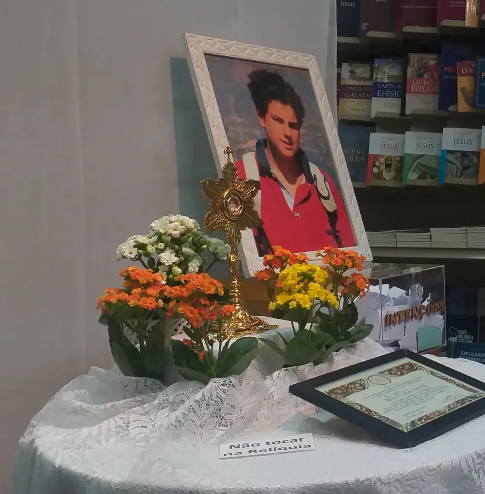
O menino do Brasil
Ocorrido na Arquidiocese de Campo Grande, em 2013. A cura foi pedida por intercessão de Carlo e reconhecida pela Santa Sé — o que abriu o caminho da beatificação, celebrada em Assis a 10 de outubro de 2020.
Vatican News, biografia lida na canonização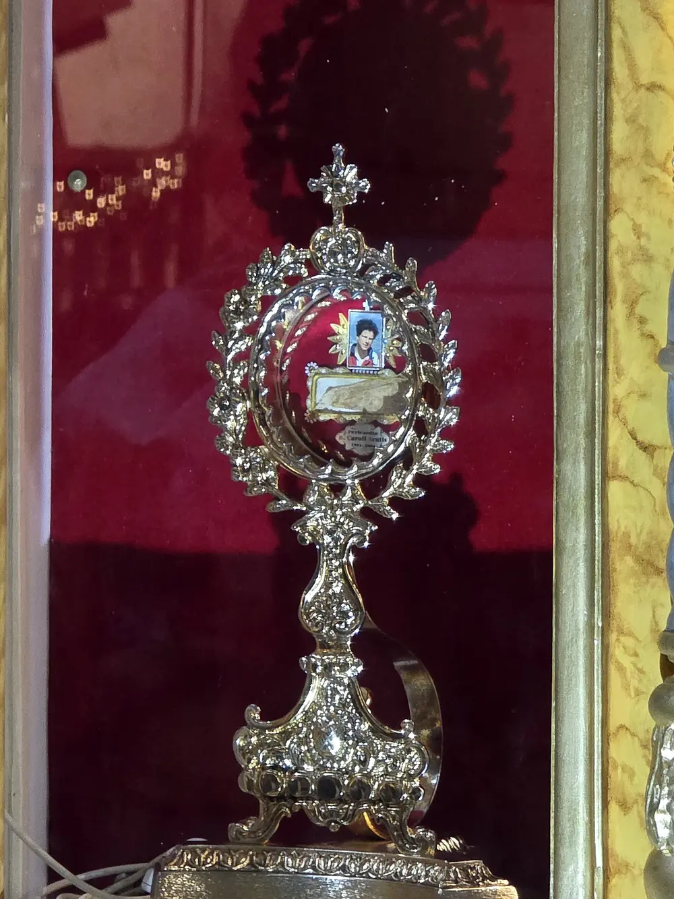
A jovem da Costa Rica
Ligado a uma jovem da Costa Rica. A mãe dela rezou no túmulo de Carlo, em Assis, a 8 de julho de 2022. O decreto reconhecendo o milagre é de 23 de maio de 2024 — e abriu a canonização.
Vatican News (edição em inglês, 23/05/2024)A exposição que ele criou
Carlo catalogou, com Nicola Gori, a exposição internacional sobre os milagres eucarísticos reconhecidos pela Igreja em vários países — o site miracolieucaristici.org é dessa mostra. A mostra reúne 136 milagres em 166 painéis, de graça, e o índice publicado documenta cada um por país.
miracolieucaristici.org — idealizada e realizada por Carlo Acutis e Nicola GoriA CRONOLOGIA OFICIAL
Vinte e quatro datas, do berço à canonização.
A linha do tempo publicada pela Associação Carlo Acutis. O santuário não acrescenta datas: repete o que a fonte registra.
Nasce em Londres
Carlo nasce em Londres, na clínica «Portland».
O batismo
Recebe o Sacramento do Batismo na Igreja «Our Lady of Dolours», na presença dos avós paternos e maternos, da tia Adriana e da bisavó Adriana.
A volta a Milão
Carlo volta a Milão com os pais, que estavam em Londres por motivos de trabalho.
O jardim de infância
Carlo frequenta a educação infantil no jardim de infância municipal do Parco Pagani, em Milão.
A escola
Inicia o ensino fundamental no Istituto San Carlo, mas após três meses, por razões práticas, é transferido para o Istituto Tommaseo das irmãs Marcelline, onde cursará todo o fundamental e o ginásio.
A Primeira Comunhão
Em Perego, Carlo recebe a Primeira Comunhão, no convento das Monjas Eremitas de Sant'Ambrogio.
A Crisma
Recebe o Sacramento da Crisma na sua paróquia, Santa Maria Segreta.
O ensino médio
Inicia o ensino médio clássico no Istituto Leone XIII, dos padres jesuítas.
A gripe que não era gripe
Carlo adoece; inicialmente pensa-se que tenha pegado uma gripe banal.
O diagnóstico
As condições de Carlo pioram dramaticamente e ele é levado à clínica De Marchi, em Milão, onde lhe é diagnosticada uma leucemia fulminante do tipo M3.
Para Monza
Carlo é transferido para Monza, para o Hospital San Gerardo.
A Unção e a Comunhão
Carlo pede para receber a Unção dos enfermos e a Comunhão, certo de que morreria em breve.
A hemorragia
Carlo entra em coma por uma hemorragia cerebral desencadeada pela leucemia fulminante do tipo M3, manifestada apenas 5 dias antes. Os médicos o declaram clinicamente morto às 17 horas, por terem cessado todas as atividades cerebrais. A família, embora quisesse doar os órgãos a um jovem à espera de transplante, não pôde fazê-lo, pois os órgãos de Carlo estavam comprometidos pela leucemia.
Às 6h45
Às 6h45 o coração de Carlo para de bater.
O funeral
O funeral é celebrado na Paróquia de Santa Maria Segreta. A igreja está tão cheia que muitos são obrigados a ficar do lado de fora.
De Ternengo para Assis
O corpo de Carlo é transferido do cemitério de Ternengo para o de Assis, segundo disposições do próprio Carlo.
Servo de Deus
Abre-se oficialmente a causa de beatificação e canonização de Carlo, que se torna Servo de Deus.
O Nihil Obstat
Chega o Nihil Obstat da Santa Sé à causa de beatificação e canonização de Carlo.
O processo diocesano
Encerra-se no Arcebispado de Milão, na presença do Cardeal Scola, o processo diocesano da causa de beatificação e canonização do Servo de Deus Carlo Acutis.
Venerável
O Papa Francisco declara Carlo Venerável.
A exumação
O corpo de Carlo é exumado.
A trasladação
O corpo de Carlo é transladado para o Santuário da Espoliação, em Assis.
Beato
Carlo é beatificado em Assis.
Santo
Carlo é proclamado Santo em São Pedro, Roma, pelo Papa Leão XIV.
AS FOTOGRAFIAS DELE
O rosto que a Igreja canonizou.
Oito fotografias do acervo oficial. As 60 estão na aba Fotos.
{kind=link}
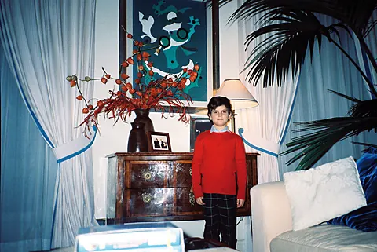
Carlo Acutis de suéter vermelho sobre camisa branca em pé na sala, ao lado de uma cômoda com flores{kind=link}
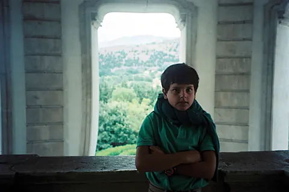
Carlo Acutis de jaqueta verde de braços cruzados, apoiado na janela de pedra{kind=link}
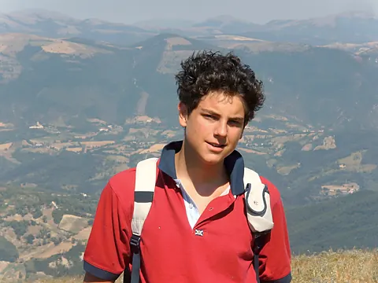
Carlo Acutis de camisa polo vermelha com mochila bege, diante de um vasto panorama de morros e vales{kind=link}
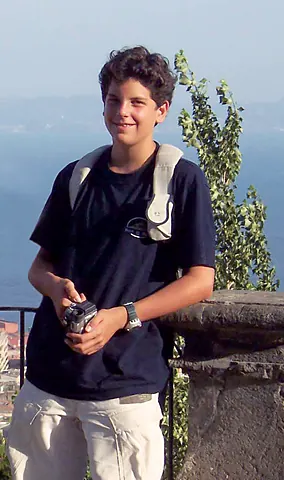
Carlo Acutis de camiseta escura e bermuda clara num terraço, segurando os óculos escuros{kind=link}
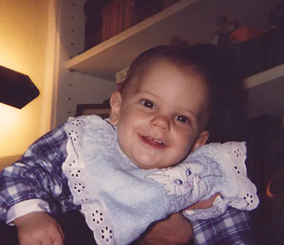
Carlo Acutis bebê, de camisa xadrez, com babador azul-claro de renda e gatinho bordado{kind=link}
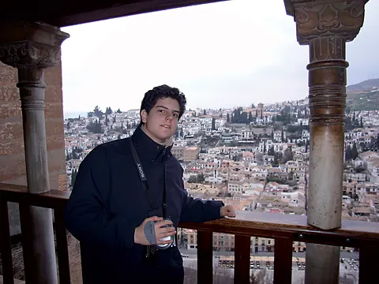
Carlo Acutis de casaco escuro apoiado num guarda-corpo de madeira, com uma cidade na encosta ao fundo{kind=link}
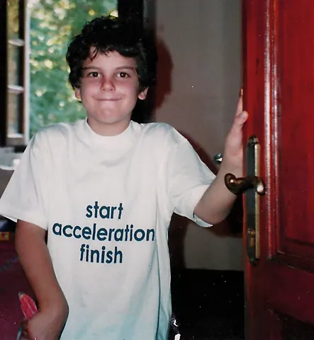
Carlo Acutis de camiseta branca com a frase 'start acceleration finish' sorrindo no vão da porta{kind=link}
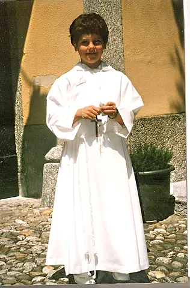
Carlo Acutis de túnica branca comprida com as mãos juntas segurando um crucifixo e um terço, em pé num calçamento de pedrasAs fotografias desta faixa e do acervo são do pacote oficial da Associação Carlo Acutis. As imagens de relíquias, do túmulo e da estátua (abaixo) vêm do Wikimedia Commons sob CC BY-SA 4.0, com o autor creditado em cada figura.
Imagens e relíquias
Como a Igreja o mostra hoje.
Fotografias com licença livre · Wikimedia CommonsAs fotografias dele em vida não circulam em banco de imagens: a que abre esta página é o retrato devocional exposto na veneração da relíquia, no Rio de Janeiro. Além dela, o que existe — e é o que se vê aqui — são as imagens devocionais, as relíquias e o túmulo. Nenhuma escultura nesta página é tratada como fotografia.
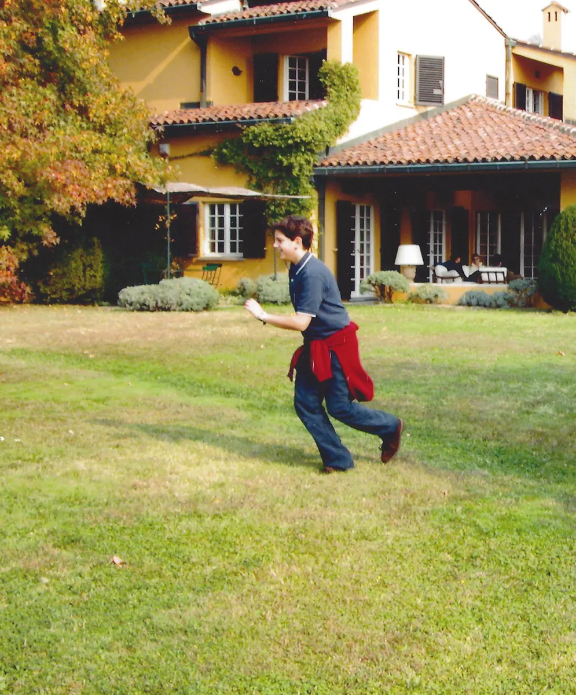
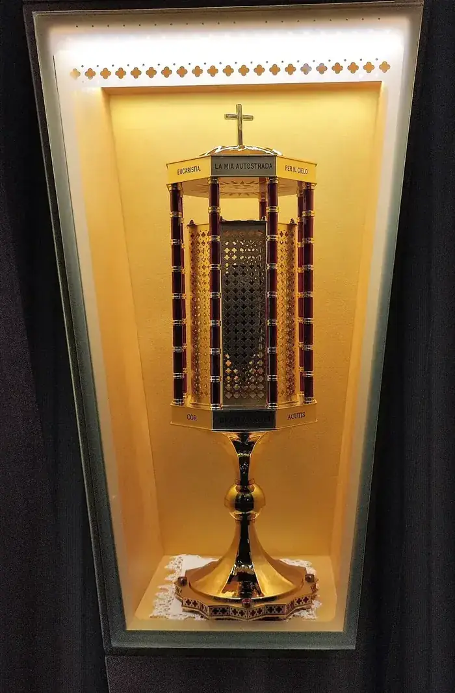
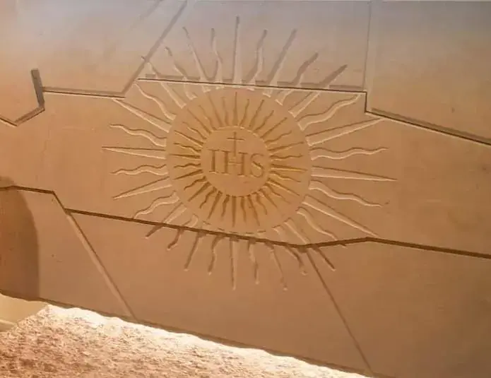
Sobre as imagens desta página: todas são de São Carlo Acutis. O retrato em vida é a reprodução devocional exposta na veneração da relíquia no Rio de Janeiro (foto CC0, Sir Velpertex di Crantx); a estátua, os relicários e o túmulo vêm do Wikimedia Commons sob CC BY-SA 4.0, com o autor creditado em cada figura.
PEREGRINAÇÃO
O túmulo, em Assis.
Carlo deixou escrito que queria ser sepultado em Assis. O corpo chegou lá em janeiro de 2007 e, desde 2019, está no Santuário da Espoliação.
Onde ele está
Desde 6 de abril de 2019 os despojos mortais de Carlo repousam no Santuário da Espoliação, em Assis — a mesma casa onde Francisco de Assis se despojou de tudo.
O monumento
O sepulcro, na nave direita, é obra do artista Eraldo Marini; os desenhos dos painéis que ilustram a vida de Carlo são do ilustrador Mario Cossu.
Como visitar
O santuário abre das 07:30 às 19:00. Endereço e horários atualizados no site oficial: assisisantuariospogliazione.com.
Ao vivo
O site oficial da Associação mantém uma transmissão ao vivo do túmulo. Ver a webcam do túmulo ↗
Na cerimônia de sepultamento, o bispo de Assis – Nocera Umbra – Gualdo Tadino, dom Domenico Sorrentino, disse: «Hoje Carlo vem repousar neste mesmo ambiente que foi testemunha da espoliação de Francisco». O cortejo partiu da catedral de San Rufino e parou também na Basílica de Santa Clara.
Fontes: site oficial da Associação Carlo Acutis (páginas «Il Santuario della Spogliazione e la tomba di Carlo» e «La traslazione del corpo di Carlo»).
A CANONIZAÇÃO
Sete de setembro de 2025.
Na Praça São Pedro, o Papa Leão XIV proclamou santos Carlo Acutis e Pier Giorgio Frassati.
«Os santos Pier Giorgio Frassati e Carlo Acutis são um convite dirigido a todos nós – especialmente aos jovens – a não desperdiçar a vida, mas a orientá-la para cima e a fazer dela uma obra-prima».Papa Leão XIV · homilia, 7/9/2025
A celebração começou às 10h na Itália e reuniu cerca de 80 mil fiéis na Praça São Pedro — canonizados no mesmo dia, Carlo e Pier Giorgio Frassati.Vatican News · 7 de setembro de 2025
Fontes: vatican.va (homilia da Santa Missa e Canonização, 7/9/2025) e Vatican News em português.
O CAMINHO
Como alguém comum chega à santidade — nas palavras dele.
Ele não escreveu tratado nenhum: deixou frases curtas, que a Igreja e a Associação publicaram. É por elas que se entende o caminho.
«A santificação não é um processo de adição mas de subtração. Menos eu, para deixar espaço a Deus»
Não é preciso virar outra pessoa. É preciso sair da frente e deixar Deus agir.
«A conversão não é outra coisa senão deslocar o olhar de baixo para o Alto: basta um simples movimento do coração»
Converter-se não é escalar nada impossível, e não é prêmio de quem já é bom. É olhar para outro lado — e isso qualquer um consegue, hoje mesmo.
«Diante do sol, bronzeamos. Diante da Eucaristia, torna-se santo»
Foi esta frase que o Papa Leão XIV citou na canonização. O caminho dele era a Missa, todos os dias — e por fora não havia nada de extraordinário: um rapaz comum que deixava aquilo trabalhar nele.
«Encontra Deus e encontrarás o sentido da tua vida»
É a resposta dele para quem procura sentido em tudo, menos ali.
PERGUNTAS
O que as pessoas perguntam.
Sete respostas curtas, cada uma com a fonte ao lado — inclusive as que corrigem o que se diz por aí.
Quem foi São Carlo Acutis?
São Carlo Acutis foi um adolescente italiano: nasceu em Londres em 3 de maio de 1991, cresceu em Milão e morreu em Monza em 12 de outubro de 2006, aos 15 anos, de uma leucemia fulminante. Tornou-se conhecido pelo amor à Eucaristia — «a minha autoestrada para o céu» — e por ter catalogado num site os milagres eucarísticos reconhecidos pela Igreja. Foi beatificado em Assis em 10 de outubro de 2020.
Fonte: carloacutis.com — biografia e linha do tempo oficiaisQuando ele foi canonizado, e por quem?
Em 7 de setembro de 2025, na Praça São Pedro, pelo Papa Leão XIV, junto com Pier Giorgio Frassati. A celebração começou às 10h (horário da Itália) e reuniu cerca de 80 mil fiéis.
Fonte: vatican.va — homilia da Missa e Canonização, 7/9/2025Onde está o túmulo dele, e dá para visitar?
No Santuário da Espoliação, em Assis, desde 6 de abril de 2019. O santuário abre das 07:30 às 19:00; horários e endereço no site oficial do santuário. Quem não pode viajar pode acompanhar pela webcam ao vivo publicada pela Associação.
Fonte: carloacutis.com e assisisantuariospogliazione.comEle é o padroeiro da internet?
Ainda não como título oficial. O que existe é uma campanha da Associação Carlo Acutis pedindo que ele seja declarado padroeiro da internet. O título é concedido pela Santa Sé, e não há decreto nesse sentido — por isso este santuário não o apresenta como padroeiro, apenas conta a campanha.
Fonte: carloacutis.com — página da campanha «Vote Carlo patrono di internet»O que é a exposição dos milagres eucarísticos?
Uma mostra internacional idealizada e realizada por Carlo Acutis, com Nicola Gori, sobre os milagres eucarísticos reconhecidos pela Igreja em vários países. A mostra pode ser baixada e impressa gratuitamente, em vários idiomas — inclusive português. O santuário publica o índice e os arquivos para quem quiser levar a exposição à própria paróquia.
Fonte: miracolieucaristici.org — site da mostra idealizada por Carlo AcutisPosso usar as fotografias dele?
As fotografias desta página vêm do acervo fotográfico oficial distribuído pela Associação Carlo Acutis, e são usadas aqui com autorização do responsável por este santuário. Para publicar, imprimir ou usar em qualquer outro lugar, procure a Associação: é ela que responde pelas imagens. A SPES não concede licença sobre imagens de terceiros.
Fonte: carloacutis.com — material oficial para downloadPor que o site avisa sobre vídeos feitos com inteligência artificial?
Porque a própria Associação publicou um aviso, em 20 de maio de 2026, sobre vídeos falsos que reproduzem Carlo, os pais dele e supostos amigos com inteligência artificial, atribuindo-lhes revelações que nunca existiram. O santuário repete o aviso e não publica nada que venha dessas fontes.
Fonte: carloacutis.com — aviso oficial no rodapé do site
FONTES OFICIAIS
Homilia da canonização ↗
Biografia ↗
Biografia lida na canonização e homilia do Papa Leão XIV (Santa Sé e Vatican News, setembro de 2025); depoimentos e reportagens do Vatican News (2018 e 2020). As frases atribuídas a ele vêm dessas fontes. A fotografia dele é o retrato devocional exposto na veneração da relíquia no Rio de Janeiro — foto de Sir Velpertex di Crantx, CC0, no Wikimedia Commons; a estátua, os relicários e o túmulo vêm do mesmo acervo sob CC BY-SA 4.0, com o autor creditado em cada figura.
TRANSPARÊNCIA
De onde vem cada palavra deste site.
os endereços oficiais — e um aviso que você precisa lerTudo o que você leu aqui vem dos quatro endereços abaixo: nada foi inventado, nada foi acrescentado. E há um aviso que você precisa ler antes de acreditar no que aparece por aí em nome dele.
FONTES OFICIAIS
Onde a informação é confiável.
Quatro endereços que respondem por Carlo Acutis. Tudo o que este santuário publica sai daqui.
carloacutis.com
Site oficial da Associação Carlo Acutis: biografia, oração oficial, material para download, pedidos de relíquia e a webcam do túmulo.
miracolieucaristici.org
A mostra internacional sobre os milagres eucarísticos, idealizada e realizada por Carlo Acutis — gratuita para baixar e imprimir.
Santuário da Espoliação
O santuário em Assis onde está o túmulo, com horários e informações de visita.
Vatican News
A fonte da Santa Sé para a canonização de 7 de setembro de 2025 e para os milagres reconhecidos.
Aviso oficial sobre vídeos falsos feitos com inteligência artificial
Publicado pela Associação Carlo Acutis em 20/05/2026
Atenção! Estao circulado pela internet a presença de vários vídeos falsos nos quais, utilizando inteligência artificial, reproduzem os pais do Carlo, o próprio Carlo, supostos amigos do Carlo ou outras pessoas que alegam ter recebido revelações especiais do proprio Carlo. É importante ressaltar que vídeos como esses envolvem muitas figuras da Igreja Católica, particularmente outros santos canonizados, que são levados a dizer coisas que não são verdadeiras. Recomendamos fortemente que não dêem ouvidos, nem reproduzam a esses vídeos e, em vez disso, consulte fontes oficiais para evitar serem enganados. Obrigado
O que isso significa para você: se um vídeo mostra Carlo, os pais dele ou supostos amigos dizendo coisas que não estão nas fontes oficiais, ele não é confiável. Consulte sempre carloacutis.com.
UMA PALAVRA SOBRE AS FONTES
O que a Igreja publicou, a Igreja publicou.
Nada aqui foi inventado nem arredondado para ficar mais bonito.
Tudo o que está neste santuário vem dos endereços acima. Onde as fontes
oficiais divergem entre si, a divergência fica à vista em vez de escondida — e o que não tem
origem fica de fora. As frases atribuídas a Carlo só entram quando estão em texto da Santa Sé
ou do Vatican News.
TRANSPARÊNCIASite independente, sem vínculo oficial com a Santa Sé,
com a Associação Carlo Acutis ou com a Diocese de Assis. Feito por devoção.
carloacutis.com ⌕ORAÇÃO
Rezar com ele, não a ele.
a oração oficial dele, para você rezar hojeA Igreja pede a intercessão dos santos: eles não substituem Deus, apresentam a ele o nosso pedido. A oração abaixo é a que a Associação Carlo Acutis publica oficialmente.
Oração para a Canonização de Beato Carlo Acutis
Oração oficial da Associação Carlo Acutis · imprimatur de dom Domenico Sorrentino, bispo de Assis – Nocera Umbra – Gualdo Tadino e Foligno
Ó Deus, nosso Pai,
Obrigado por nos teres dado Carlo,
modelo de vida para os jovens, e mensagem
de amor para todos. Tu fizeste com que
se apaixonasse pelo teu Filho Jesus, fazendo
da Eucaristia a sua “rodovia para o Céu”.
Tu lhe deste Maria, como mãe amadíssima,
e fizeste dele com o Rosário um cantor
da sua ternura. Aceita a sua oração por nós.
Olha especialmente para os pobres,
que ele amou e socorreu.
[Concede também a mim, pela sua intercessão,
a graça de que eu preciso...]
E torna plena a nossa alegria,
colocando Carlo entre os santos
da tua igreja universal, para que o seu sorriso
resplandeça ainda para nós
para a glória do teu nome.
Amen
Pater, Ave, Gloria
COMO REZAR
Três passos, sem invenção.
O santuário não cria novenas nem promessas. O que se segue é o uso comum da Igreja e o que a fonte oficial orienta.
1. Peça a intercessão dele
Diga o seu pedido a Deus e acrescente, com confiança, «São Carlo Acutis, roga por mim». A oração é dirigida a Deus; Carlo apenas intercede.
2. Reze o que a fonte indica
A própria oração oficial termina pedindo o Pai-Nosso, a Ave-Maria e o Glória. É o que a Associação publica, e é o que este santuário repete.
3. Faça o que ele fazia
Ele escrevia que a Eucaristia era «a autoestrada para o céu» e que, «diante do sol, bronzeamos; diante da Eucaristia, torna-se santo». O caminho que a Igreja reconhece nele é esse: Missa, confissão e Rosário.
O que este santuário não faz
Não publica novenas, frases ou orações sem fonte; não promete milagres; não pede dinheiro em nome de Carlo; não recolhe pedidos de oração por aqui. Se você viu algum texto atribuído a ele que não está nas fontes oficiais, desconfie — há material falso circulando, inclusive com inteligência artificial.
FONTE DA ORAÇÃOOração oficial, na versão em português publicada pela Associação Carlo Acutis.
carloacutis.com ⌕O ACERVO FOTOGRÁFICO
60 fotografias de São Carlo Acutis, do acervo oficial.
a vida dele, do jeito que a família guardouEstas são as fotografias reais de São Carlo Acutis: a infância, as férias na montanha e na neve, a casa, os caminhos, a mochila, a camisa vermelha. Todas vêm do acervo fotográfico que a Associação Carlo Acutis distribui oficialmente. É a vida inteira dele como a família a guardou — e faz uma coisa que nenhum texto faz: mostra que a santidade tem rosto de gente comum, dessas que a gente cruza na rua.
{kind=link}
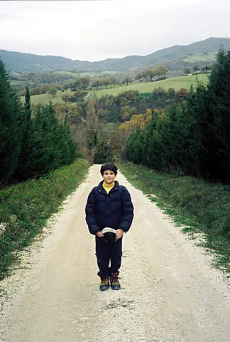
Carlo Acutis de casaco escuro parado numa estrada de terra entre pinheiros, com colinas verdes ao fundo{kind=link}
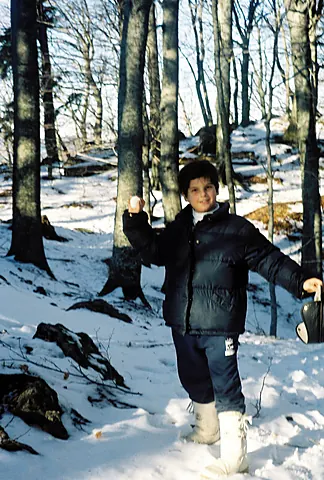
Carlo Acutis de jaqueta escura com os braços abertos num bosque coberto de neve{kind=link}
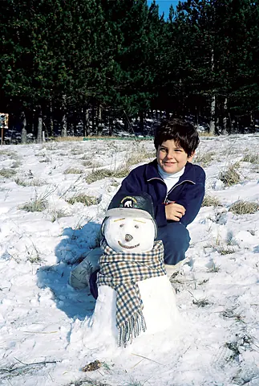
Carlo Acutis agachado ao lado de um boneco de neve de chapéu preto e cachecol xadrez{kind=link}
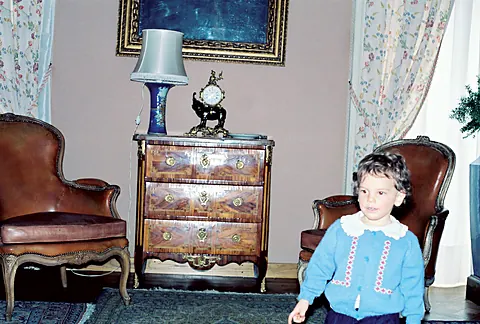
Carlo Acutis de suéter azul-claro com gola de renda em pé numa sala de móveis antigos{kind=link}
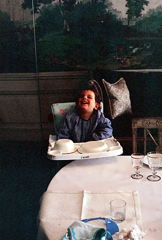
Carlo Acutis sorrindo à mesa posta, com um quadro de paisagem na parede atrás dele{kind=link}
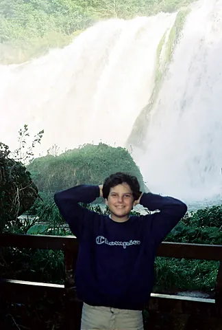
Carlo Acutis de moletom azul-marinho escrito 'Champion', com as mãos atrás da cabeça, diante de uma enorme cachoeira{kind=link}
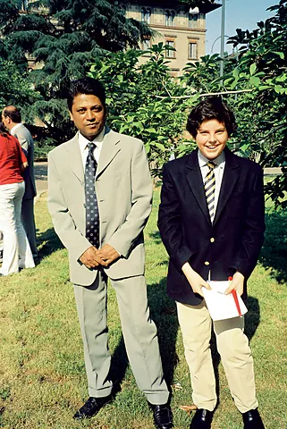
Carlo Acutis de blazer e gravata ao lado de um homem adulto de terno claro, num gramado{kind=link}
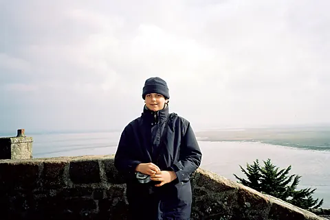
Carlo Acutis de capuz e gorro escuros atrás de um parapeito de pedra, com uma grande extensão de água ao fundo{kind=link}
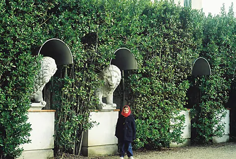
Carlo Acutis de casaco escuro e gorro vermelho caminhando num jardim com sebes altas e leões de pedra{kind=link}
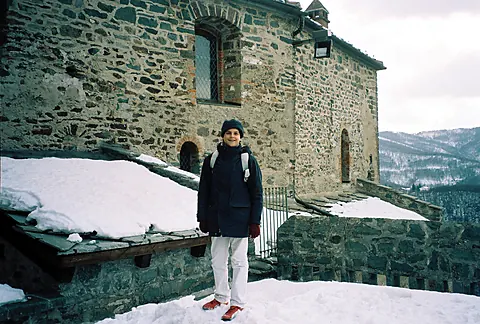
Carlo Acutis de jaqueta escura e calça clara em frente a um casarão de pedra, com neve no chão Carlo Acutis de suéter vermelho sobre camisa branca em pé na sala, ao lado de uma cômoda com flores{kind=link}
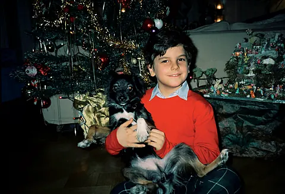
Carlo Acutis de suéter vermelho segurando com as duas mãos um cachorrinho preto e branco, junto à árvore de Natal e ao presépio Carlo Acutis de jaqueta verde de braços cruzados, apoiado na janela de pedra{kind=link}
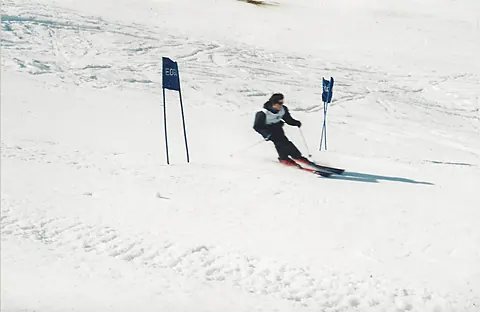
Carlo Acutis esquiando, descendo uma encosta de neve entre dois postes de slalom{kind=link}
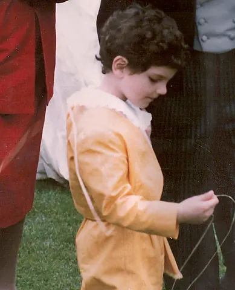
Carlo Acutis de jaqueta amarelo-claro olhando para as mãos, com um gramado ao fundo Carlo Acutis de camisa polo vermelha com mochila bege, diante de um vasto panorama de morros e vales Carlo Acutis de camiseta escura e bermuda clara num terraço, segurando os óculos escuros{kind=link}
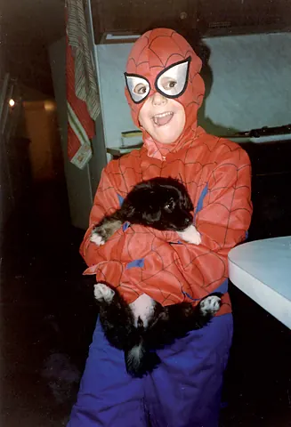
Carlo Acutis com fantasia de Homem-Aranha segurando um filhote de cachorro preto e branco no colo Carlo Acutis bebê, de camisa xadrez, com babador azul-claro de renda e gatinho bordado{kind=link}
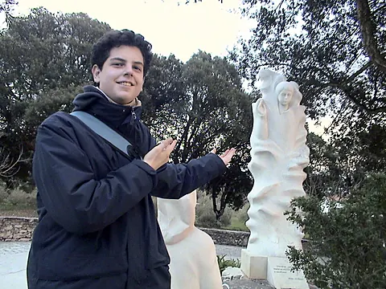
Carlo Acutis de jaqueta escura sorrindo com uma máquina fotográfica nas mãos, ao lado de esculturas de mármore branco Carlo Acutis de casaco escuro apoiado num guarda-corpo de madeira, com uma cidade na encosta ao fundo{kind=link}
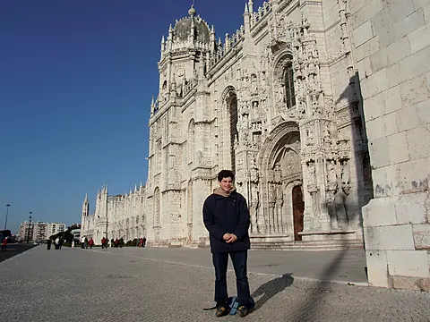
Carlo Acutis de jaqueta escura e cachecol em pé numa praça de pedra, diante de um enorme edifício religioso de fachada esculpida{kind=link}
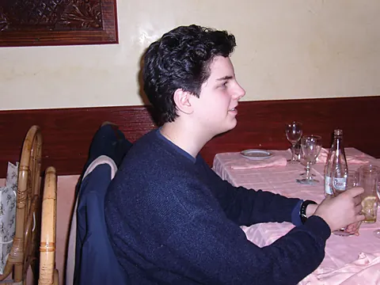
Carlo Acutis de suéter azul-marinho sentado de perfil numa mesa de restaurante, com um copo com limão na mão{kind=link}
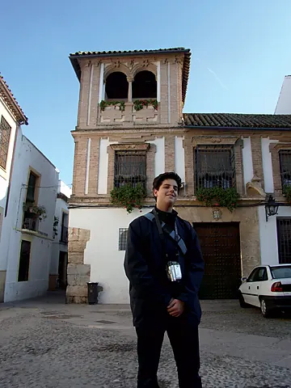
Carlo Acutis de jaqueta escura com máquina fotográfica no peito, em pé numa pracinha de calçamento de pedras{kind=link}
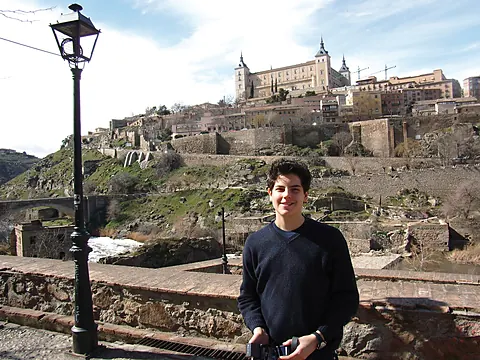
Carlo Acutis de suéter azul-marinho em pé diante de uma grande fortaleza de pedra no alto de um morro Carlo Acutis de camiseta branca com a frase 'start acceleration finish' sorrindo no vão da porta{kind=link}
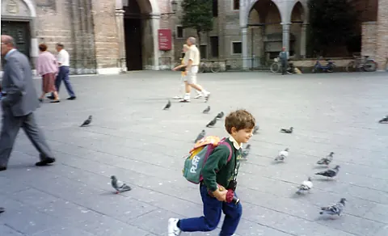
Carlo Acutis de jaqueta verde com mochila amarela andando depressa numa grande praça cheia de pombos{kind=link}
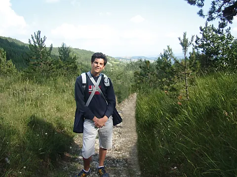
Carlo Acutis de jaqueta escura e bermuda clara em pé num caminho de terra entre capim alto{kind=link}
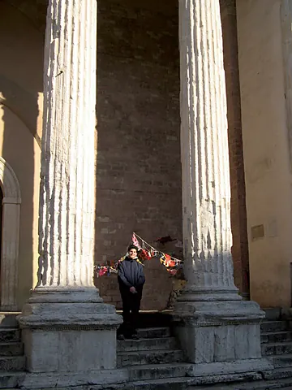
Carlo Acutis criança, de gorro vermelho, na escadaria entre colunas de um edifício{kind=link}
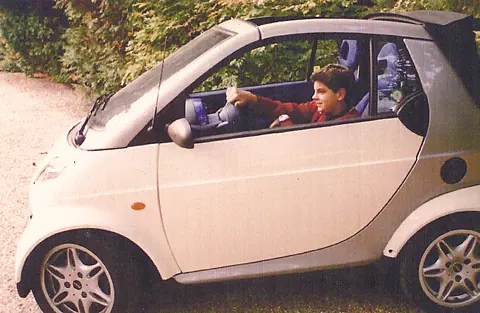
Carlo Acutis de suéter vermelho sentado ao volante de um carro pequeno branco de capota preta Carlo Acutis de túnica branca comprida com as mãos juntas segurando um crucifixo e um terço, em pé num calçamento de pedras Carlo Acutis de jaqueta azul-clara com cachecol vermelho correndo pelo gramado, em frente a uma casa de varanda{kind=link}
{kind=link}
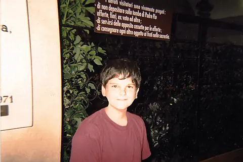
Carlo Acutis de camiseta vinho ao lado de uma placa de bronze com inscrição em italiano{kind=link}
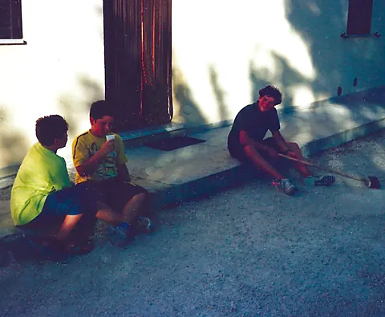
Carlo Acutis com outros dois meninos, sentados ao sol numa calçada junto a um muro{kind=link}
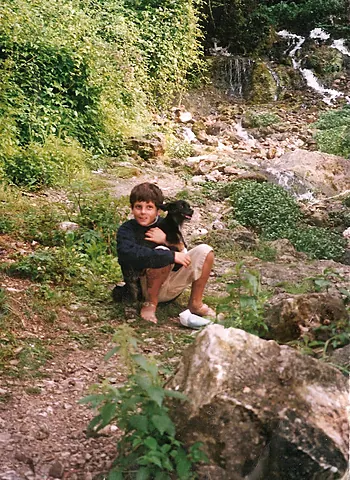
Carlo Acutis agachado entre pedras numa encosta, junto a um pequeno curso de água{kind=link}
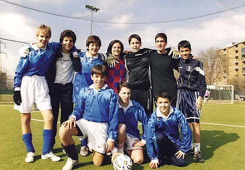
Time de futebol de Carlo Acutis: os meninos posando no campo, a maioria com camisa azul-clara e shorts brancos, um deles com a bola{kind=link}
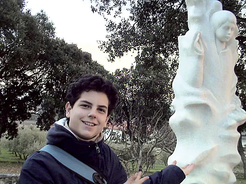
Carlo Acutis de jaqueta azul-escura sorrindo e tocando um monumento de pedra branca com figuras esculpidas{kind=link}
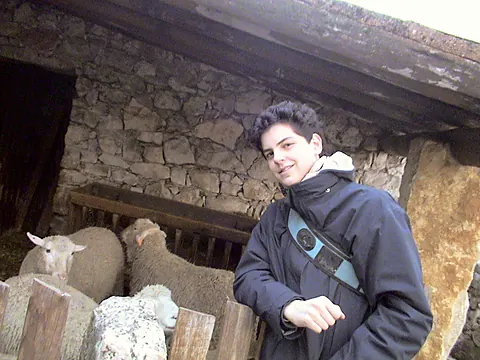
Carlo Acutis de jaqueta azul-escura com bolsa a tiracolo, sorrindo diante de um estábulo de pedra com ovelhas{kind=link}
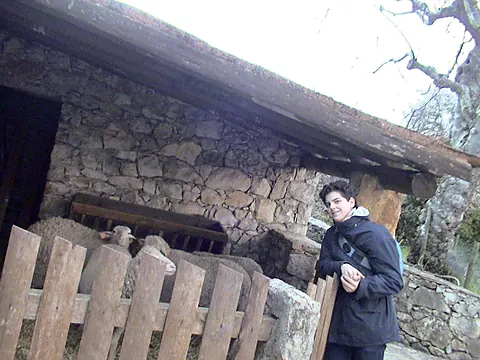
Carlo Acutis de jaqueta escura de braços cruzados junto à cerca de madeira, diante de um galpão de pedra com ovelhas{kind=link}
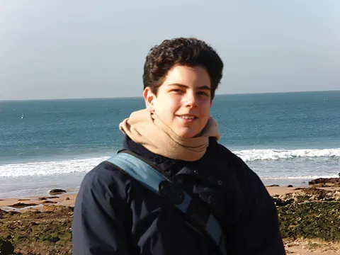
Retrato de Carlo Acutis de jaqueta escura e cachecol claro sorrindo, com o mar ao fundo{kind=link}
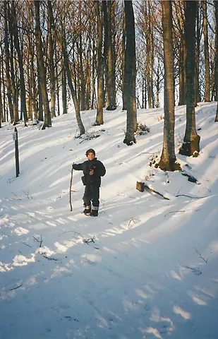
Carlo Acutis ao longe, de roupa escura, em pé no meio de um bosque nevado{kind=link}
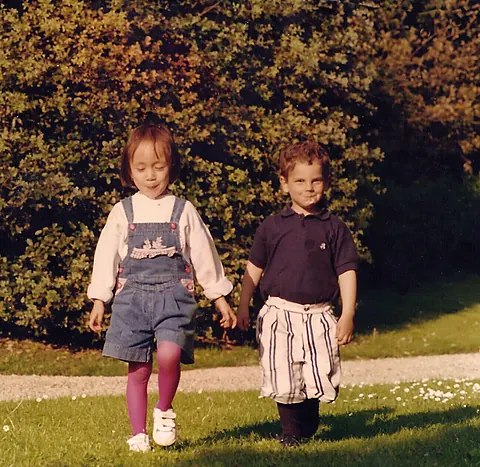
Carlo Acutis de mãos dadas com outra criança, caminhando num gramado com margaridas{kind=link}
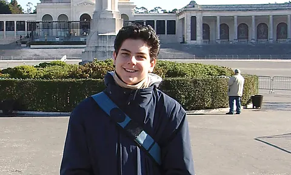
Carlo Acutis de jaqueta azul-escura e gola bege sorrindo numa esplanada calçada, com edifício de colunata ao fundo{kind=link}
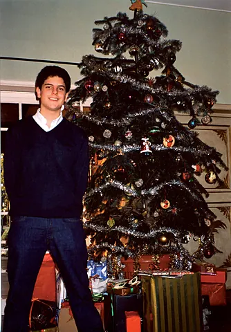
Carlo Acutis de suéter azul-marinho e camisa branca posando ao lado da árvore de Natal com presentes{kind=link}
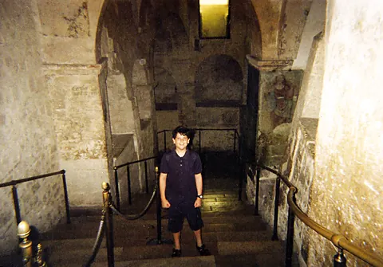
Carlo Acutis de camisa escura em pé numa escadaria de pedra com grades e restos de pintura nas paredes Carlo Acutis de roupa escura num caminho de jardim coberto de neve, entre árvores nevadas Retrato de Carlo Acutis de jaqueta escura com alça de bolsa azul-clara, sorrindo num jardim coberto de neve Carlo Acutis de camiseta escura e agasalho vermelho na cintura chutando uma bola de futebol num gramado Carlo Acutis de casaco escuro em pé numa avenida larga ladeada de árvores sem folhas, com uma torre metálica ao fundo Carlo Acutis de blazer escuro com gravata, ao lado de um homem alto de terno claro, na frente de um edifício Carlo Acutis de camisa polo azul-marinho e bermuda clara em pé ao lado de um carro antigo com placa 75217-FI Carlo Acutis de blusa preta e mochila em pé junto a um painel de azulejos azuis e brancos, numa calçada de pedras Carlo Acutis de jaqueta escura com mochila, numa estrada de terra com vales verdes e céu nublado ao fundo Carlo Acutis de camisa vermelha de gola escura, com mochila, em pé num morro gramado com bosque ao fundo Carlo Acutis de camisa vermelha e mochila, de perfil, andando num caminho de terra entre oliveiras, com o vale ao fundo Carlo Acutis de camisa vermelha de gola clara e mochila, olhando para a câmera, com o vale ao fundo Carlo Acutis de camisa azul-marinho de gola clara diante de uma marina com barcos, com uma vila na encosta ao fundo Carlo Acutis de camisa vermelha de gola azul-marinho, com os óculos pendurados na camisa e as mãos na cintura, num campo dourado com a colina e o bosque ao fundo Carlo Acutis de camisa verde abraçado a um cachorro preto e branco, agachado no capim seco, com a colina ao fundo Carlo Acutis de suéter vermelho sobre camisa azul de colarinho, em ambiente interno com um abajur ao fundo{kind=link}
{kind=link}
{kind=link}
{kind=link}
{kind=link}
{kind=link}
{kind=link}
{kind=link}
{kind=link}
{kind=link}
{kind=link}
{kind=link}
{kind=link}
{kind=link}
{kind=link}
Nenhuma fotografia corresponde a essa busca. Tente outra palavra — as legendas falam de neve, cachorro, casa, mochila, futebol e cidade.
De onde vêm estas fotografias: do acervo oficial distribuído pela Associação Carlo Acutis. As legendas dizem o que aparece na imagem, sem adivinhar lugar, data ou idade.
PROCEDÊNCIA«Foto di Carlo Acutis nei vari momenti della vita», o acervo oficial distribuído pela Associação Carlo Acutis (carloacutis.com).
carloacutis.com ⌕A OBRA DELE
A Eucaristia era a autoestrada dele. Ele fez um mapa dela.
a mostra que ele criou, milagre por milagreAos quinze anos, Carlo montou sozinho um site para catalogar os milagres eucarísticos reconhecidos pela Igreja no mundo inteiro. Virou uma exposição que já passou pelos cinco continentes — e que qualquer paróquia pode baixar e imprimir de graça. Esta página conta a história e reúne 33 fichas dela, com a fonte de cada uma.
136 milagres
É quantos a mostra apresenta, ocorridos ao longo dos séculos em vários países, com fotografias e descrições históricas — o que permite a «visita virtual» aos locais.
166 painéis de 60 × 80 cm
A exposição é cedida em PDF de alta definição («for print») para imprimir os cartazes em tamanho de cartaz de rua. Os folhetos e os cartazes menores também são editáveis.
17 idiomas
A lista oficial publica os pacotes em italiano, inglês, espanhol, português, francês, alemão, russo, grego, húngaro, neerlandês, polaco, vietnamita, filipino, chinês, japonês, árabe e urdu.
De graça, para a sua paróquia
A mostra é cedida gratuitamente. Só nos Estados Unidos foi recebida em quase 10.000 paróquias. Os arquivos estão ao final desta página.
O ÍNDICE
33 milagres, com a fonte ao lado.
Busque por cidade, país, ano ou palavra do relato. Nada aqui é resumo de resumo: cada ficha aponta para a página oficial de onde saiu.
Augsburg
Alemanha · 1194
O 'Bem Miraculoso' de Augsburg: uma Hóstia roubada transformou-se em Carne ensanguentada; análises feitas ao longo dos séculos confirmaram tratar-se de carne e sangue humanos, e a relíquia é guardada no convento de Heilig Kreuz pelos Padres Dominicanos.
Ver a ficha na mostra oficial ↗Walldürn
Alemanha · 1330
Durante a Missa um sacerdote derrubou acidentalmente as espécies do vinho consagrado, que se transformaram em Sangue e formaram sobre o corporal uma imagem de Cristo crucificado; o corporal ensanguitado venera-se ainda hoje na Basílica Menor de S. Jorge, em Walldürn.
Ver a ficha na mostra oficial ↗Wilsnack
Alemanha · 1383
Após um terrível incêndio na aldeia em 1383, foram encontradas entre os restos da igreja paroquial três Hóstias completamente intactas que sangravam repetidamente; as peregrinações multiplicaram-se e o culto foi aprovado por duas Bulas do Papa Eugénio IV em 1447.
Ver a ficha na mostra oficial ↗Buenos Aires
Argentina · 1992-1994-1996
Na paróquia de Santa Maria, em Buenos Aires, ocorreram três Milagres Eucarísticos (1992, 1994 e 1996); o professor Ricardo Castañón Gomez foi chamado pelo então arcebispo de Buenos Aires — o atual Papa Francisco — para analisar o prodígio de 15 de agosto de 1996.
Ver a ficha na mostra oficial ↗Fiecht
Áustria · 1310
Durante a Santa Missa, o sacerdote duvidou da presença real de Jesus na Eucaristia e logo após a consagração o vinho transformou-se em Sangue, que borbulhava e saía do cálice; em 1480 o Sangue continuava 'fresco como se tivesse saído hoje de uma ferida' e está guardado num relicário no Mosteiro de São Georgenberg.
Ver a ficha na mostra oficial ↗Bruges
Bélgica · 1203
A relíquia do Preciosíssimo Sangue de Bruges, documentada desde 1256, terá chegado de Constantinopla: após a conquista da cidade em 1203, Balduíno IX, Conde da Flandres e novo imperador, enviou a relíquia do Preciosíssimo Sangue para a sua pátria, Bruges.
Ver a ficha na mostra oficial ↗Tumaco
Colômbia · 1906
O maremoto que atingiu em 1906 a costa do Pacífico causou enormes estragos, mas a ilhota de Tumaco foi poupada: segundo o relato do padre Bernardino García de la Concepción, uma onda enorme entrou no porto e no mercado, poupando milagrosamente a ilha graças à fé dos habitantes no Santíssimo Sacramento.
Ver a ficha na mostra oficial ↗Ludbreg
Croácia · 1411
Em 1411, em Ludbreg, um sacerdote duvidou da presença real do Corpo e Sangue de Cristo nas espécies consagradas e, após a consagração do vinho, este transformou-se em Sangue; a relíquia continua a atrair milhares de fiéis e no início de Setembro celebra-se a "Sveta Nedilja" em honra do milagre.
Ver a ficha na mostra oficial ↗S. Maria Egiziaca
Egito · séc. VII
O painel evoca Santa Maria Egiziaca, a quem o monge Zósimo deu a comunhão no deserto; a tradição oriental (relatada pelo bispo Sofrónio de Jerusalém, séc. VII) refere que o monge a viu atravessar o Jordão andando sobre as águas para receber a Eucaristia.
Ver a ficha na mostra oficial ↗Daroca
Espanha · 1239
Em 1239, durante um combate contra os mouros, o sacerdote interrompeu a Missa e escondeu as Hóstias consagradas no pano do corporal; depois da vitória, ao pedirem-lhe a comunhão, as Hóstias foram encontradas inundadas de Sangue, e a relíquia do corporal é ainda hoje venerada em Daroca.
Ver a ficha na mostra oficial ↗Guadalupe
Espanha · 1420
Durante a celebração da Missa, um sacerdote vê cair da Hóstia Consagrada numerosas gotas de Sangue; o prodígio reforçou a fé do padre e de muitos fiéis, entre eles o Rei de Castela, e as relíquias foram expostas à veneração durante o Congresso Eucarístico de Toledo de 1926.
Ver a ficha na mostra oficial ↗O'Cebreiro
Espanha · 1300
Durante a Missa em O'Cebreiro, a Hóstia converteu-se em Carne e o vinho em Sangue, que saiu do cálice manchando o corporal; o prodígio ocorreu para sustentar a pouca fé do sacerdote que não acreditava na presença real de Jesus na Eucaristia, e as relíquias são ainda hoje veneradas na igreja onde tudo aconteceu.
Ver a ficha na mostra oficial ↗Paris
França · 1290
Na Páscoa de 1290, um incrédulo obteve uma Hóstia consagrada para profaná-la, cortou-a com uma navalha e lançou-a em água a ferver; a Hóstia elevou-se no ar e acabou por pousar na tigela de uma mulher piedosa, que a entregou ao pároco — e a casa do profanador foi transformada em capela onde a Santa Hóstia era guardada.
Ver a ficha na mostra oficial ↗Faverney
França · 1608
Na vigília de Pentecostes de 1608, os monges de Faverney expuseram o Santíssimo Sacramento para adoração e durante a noite um grande incêndio destruiu o altar e os paramentos, mas não o relicário com a sagrada Hóstia, que foi encontrado alguns dias depois suspenso no ar e perfeitamente intacto; a Partícula é conservada ainda hoje.
Ver a ficha na mostra oficial ↗Avignone
França · 1433
Em 30 de Novembro de 1433, durante a adoração pública na capela da Irmandade dos Penitentes, Avinhão foi submersa pelas águas do Ródano; dois membros da Irmandade chegaram de barco à capela e viram as águas dividirem-se à direita e à esquerda, deixando o altar e o relicário do Santíssimo Sacramento perfeitamente secos.
Ver a ficha na mostra oficial ↗Amsterdam
Holanda · 1345
O doente Ysbrand Dommer expeliu a Comunhão recebida e a empregada lançou a Hóstia na lareira acesa; no dia seguinte a Partícula foi encontrada completamente intacta e suspensa no ar, no meio do fogo, e o bispo de Utrecht, Jan van Arkel, autorizou o culto — ainda hoje Amesterdão realiza anualmente uma procissão em honra do prodígio.
Ver a ficha na mostra oficial ↗Alkmaar
Holanda · 1429
Em 1429, na Catedral de S. Lourenço de Alkmaar, o padre Folkert derramou inadvertidamente sobre o altar e a casula o vinho consagrado da sua primeira Missa, que se transformou milagrosamente em Sangue; todas as tentativas de lavar as marcas falharam e a casula ensanguentada conserva-se ainda na catedral.
Ver a ficha na mostra oficial ↗Chirattakonam
Índia · 2001
A 5 de Maio de 2001, em Trivandrum, apareceu na Hóstia o rosto de um homem semelhante ao de Cristo coroado de espinhos; o arcebispo Cyril Mar Baselice comentou o prodígio como um sinal que exige resposta dos crentes, e o relicário com a Hóstia ficou guardado na igreja.
Ver a ficha na mostra oficial ↗Lanciano
Itália · 750 D.C.
Um monge sacerdote duvidou que na Hóstia consagrada estivesse realmente o Corpo e o Sangue de Cristo e, ao celebrar a Missa na igreja de São Francisco, viu transformar-se em Carne a Hóstia e em Sangue o Vinho — prodígio observado pelos presentes; a Carne está ainda intacta e o Sangue dividido em cinco partes desiguais que pesam todas juntas tanto quanto cada uma delas.
Ver a ficha na mostra oficial ↗Bolsena
Itália · 1264
Um sacerdote de Praga, em peregrinação por Itália, celebrava Missa na Basílica de Bolsena quando, no momento da consagração, a Hóstia se transformou em carne; as Sagradas Espécies foram inspeccionadas pelo Papa Urbano IV e por S. Tomás de Aquino, e o Pontífice decidiu então estender a toda a Igreja a festa do Corpo de Deus.
Ver a ficha na mostra oficial ↗Rimini
Itália · 1227
Santo Antônio, desafiado pelo herético cátaro Bonovillo a demonstrar a presença real de Jesus na Eucaristia, apresentou a Hóstia consagrada a uma mula que jejuara três dias; o animal ajoelhou-se diante do Santíssimo e recusou a cevada que lhe foi posta.
Ver a ficha na mostra oficial ↗Siena
Itália · 1730
Na Basílica de S. Francisco de Siena conservam-se 223 Hóstias intactas há 276 anos: o arcebispo Tiberio Borghese encerrara durante dez anos, numa caixa de lata lacrada, hóstias não consagradas, e quando a comissão científica a reabriu encontrou apenas vermes e fragmentos putrefactos, enquanto as consagradas permanecem perfeitas.
Ver a ficha na mostra oficial ↗Turim
Itália · 1453
Na Basílica do Corpo de Deus de Turim uma grade de ferro cerca o lugar do primeiro Milagre Eucarístico da cidade, em 1453: a Sagrada Hóstia, ao libertar-se do saco que a encerrava, elevou-se por si mesma ao alto e depois desceu sobre as mãos dos turineses em súplica, como recorda a inscrição no pavimento (6 de Junho de 1453).
Ver a ficha na mostra oficial ↗Cascia
Itália · 1330
Em 1330, em Cascia, um sacerdote chamado a levar a Comunhão a um camponês gravemente doente colocou irreverentemente uma Hóstia dentro do livro de orações; junto do doente, ao abrir o livro, viu que a Hóstia se tinha transformado num coágulo de sangue que manchara também as páginas do livro.
Ver a ficha na mostra oficial ↗Morne-Rouge
Ilha de Martinica · 1902
Na manhã de 8 de Maio de 1902 o vulcão da Montanha Pelée entrou inesperadamente em erupção e destruiu por completo a cidade de Saint-Pierre, enquanto a aldeia de Morne-Rouge, situada nas encostas do vulcão, ficou misteriosamente poupada; o facto prodigioso foi acompanhado da aparição de Jesus e do Sagrado Coração no Santíssimo Sacramento exposto para adoração pública, com inúmeras testemunhas.
Ver a ficha na mostra oficial ↗Tixtla
México · 2006
Em 21 de outubro de 2006, durante uma celebração em Tixtla, uma hóstia começou a sangrar; a 12 de outubro de 2013 o bispo da diocese de Chilpancingo-Chilapa, D. Alejo Zavala Castro, anunciou por carta pastoral o reconhecimento do Milagre Eucarístico, declarando-o "um sinal divino" que confirma a presença real de Jesus na Eucaristia.
Ver a ficha na mostra oficial ↗Eten
Perù · 1649
O Milagre Eucarístico de Eten ocorreu em Porto Eten: na Hóstia exposta para adoração pública apareceu o Menino Jesus e três corações resplandecentes de cor branca, unidos entre si; todos os anos a festa em honra do acontecimento começa a 12 de Julho, com a transladação da estátua do Divino Menino, e termina a 24 de Julho.
Ver a ficha na mostra oficial ↗Legnica
Polônia · 2013
A 25 de dezembro de 2013, na igreja de São Jacinto em Legnica, uma Hóstia caiu no chão durante a distribuição da Comunhão e foi colocada em água dentro do tabernáculo; dias depois surgiu à superfície uma mancha vermelha e a comissão instituída pelo bispo Stefan Cichy confirmou tratar-se de tecido semelhante ao "músculo cardíaco humano com alterações que surgem frequentemente durante uma agonia".
Ver a ficha na mostra oficial ↗Santarém
Portugal · 1247
O Milagre Eucarístico de Santarém, considerado entre os mais importantes juntamente com o de Lanciano: a Hóstia transformou-se em carne sangrenta de que brotava Sangue; as duas relíquias conservam-se ainda hoje na igreja de Santo Estêvão, em Santarém, e a casa dos esposos onde ocorreu tornou-se capela a partir de 1684.
Ver a ficha na mostra oficial ↗Saint-André da Reunião
Ilha Reunião · 1902
A 26 de Janeiro de 1902, junto da igreja paroquial de Santo André, na ilha de Reunião, o abade Henry Lacombe, pároco daquela igreja, foi testemunha do Milagre que ele mesmo pôde narrar a milhares de pessoas durante o Congresso Eucarístico de Angoulême (1904); na Hóstia apareceu o rosto de Jesus por bastantes horas e o fenómeno foi visto por milhares de pessoas.
Ver a ficha na mostra oficial ↗Ettiswil
Suíça · 1447
Ana Vögtli, pertencente a uma seita satânica, roubou da igreja paroquial de Ettiswil a custódia com a grande Hóstia, que depois foi encontrada junto a um valado, elevada no ar e rodeada de viva luz, dividida em sete pedaços unidos entre si como uma flor; muitos Papas concederam indulgências ao santuário, o último Pio XII em 1947.
Ver a ficha na mostra oficial ↗Betania
Venezuela · 1991
A 8 de dezembro de 1991, o padre Otty Ossa Aristizábal celebrava missa na capela do Santuário de Betânia, em Cúa, e durante a consagração viu a hóstia sangrar; a hóstia milagrosa está guardada em Los Teques, no convento das Freiras Agostinianas do Sagrado Coração de Jesus, onde é exposta à adoração dos fiéis — e um jovem americano filmou-a a pulsar como um coração.
Ver a ficha na mostra oficial ↗Fátima
Portugal · 1916
O Anjo da Paz aparece por três vezes aos pastorinhos de Fátima, em 1916, para os preparar para as futuras aparições de Nossa Senhora; na terceira aparição deu a comunhão a Lúcia com uma Hóstia da qual desciam gotas de Sangue recolhidas no cálice, e Francisco e Jacinta comungaram do conteúdo do cálice, dizendo-lhes: «Tomai e bebei o Corpo e Sangue de Jesus Cristo horrivelmente ultrajado pelos homens ingratos».
Ver a ficha na mostra oficial ↗
Nenhum milagre corresponde a essa busca.
PARA A SUA PARÓQUIA
Leve a mostra para a sua igreja.
A exposição é da Associação Carlo Acutis e do site da mostra. Os arquivos abaixo são os oficiais, em português — o santuário apenas aponta para eles, sem hospedar nada.
- Painéis para impressão (alta definição, 60x80 cm)Arquivo oficial em português · 1415,6 MB · a mostra é gratuita para baixar e imprimir
- Painéis para a webArquivo oficial em português · 144,0 MB · a mostra é gratuita para baixar e imprimir
- Folhetos-Cartazes (catálogo e cartazes)Arquivo oficial em português · 63,0 MB · a mostra é gratuita para baixar e imprimir
- Material para preparação (totens, relicários, banners)Arquivo oficial em português · 20,8 MB · a mostra é gratuita para baixar e imprimir
Sobre as datas. Onde as fontes da própria mostra divergem — há fichas em que o
índice e o painel dão séculos diferentes, e outras em que o índice inglês e o português discordam do ano —
o santuário segue o painel em português e não esconde a diferença. Também não arredondamos rótulos: as
fichas repetem o nome que a lista oficial usa, mesmo quando aparece em italiano.
FONTESite oficial da mostra «Os Milagres Eucarísticos no Mundo»,
idealizada e realizada por Carlo Acutis com Nicola Gori.
miracolieucaristici.org ⌕